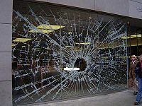
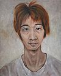

Todo a cien
 De: La Frikipedia, la enciclopedia extremadamente seria.
De: La Frikipedia, la enciclopedia extremadamente seria.
| De la serie empresas malignas:
|
| Todo a cien
|
|
|
| Perteneciente al grupo:
|
Tiendas chinas
|
| Se dedica a:
|
Vender cosas que no usaras en la vida
|
| País de origen:
|
China Y España
|
| Año de fundación:
|
787 A.C
|
| Super Presidente:
|
Bill Gates
|
| Nivel de maldad:
|
Mas bien mucha
|
| Empresas absorbidas:
|
Las minitiendas chinas
|
| Número de empleados:
|
1, el dependiente
|
| Atentados contra la humanidad
|
Vender comida caducada
|
| ¿Se aconseja trabajar aquí?
|
No, se paga muy poco
|
| ¿Se recomienda el boicot?
|
Es imposible boicotear un todo a cien , nunca cierran
|
| Cantidad de denuncias:
|
S cuentan por millones
|
| Sitio web:
|
[No tiene, que esperabas Página oficial de Todo a cien]
|
«¡¡Que bien ,un paraguas con agujeros¡¡»
~ IP anónima Comprando en un todo a cien
«Un momento, este paraguas tiene agujeros, ¡¡Me han timado¡¡»
~ IP anónima Cinco minutos despues del anterior comentario.
Establecimientos comerciales, frecuentados por glamour. La expresion Todo a cién también puede referirse a China
Las tiendas de todo a cien constituyen un universo paralelo pues lo único que encuentras son cosas inservibles que no utilizarás nunca. Existe un poder superior que no te permite salir de allí sin comprar nada.
Historia
Los todo a cien fueron fundados en el año 0,5 despues de Cristo por Bill Gates, fueron llamados asi, porque Bill pensaba forrarse vendiendo todo a 100 euros, evidentemente , las cosas no le fueron muy bien, mas concretamente no fue ni su puta madre nadie,pero no se desanimo y pensó en vender las cosas a 100 centimos (Un euro),pero en vez de vender cosas utilies vendia cosas como el paraguas con agujeros,la sarten sin mango y los calzoncillos rosas con lo que tuvo gran exito sobre todo en los paises asiaticos, que estan formados por frikis en el 70%.
Por dentro
Hay quien afirma que es necesario llevar una brujula y un mapa para poder salir con vida de alli, hay quienes entrearon en su dia y nunca volvieron a salir. Realmente es complicado orientarse entre tanto juguete,ropa interior de segunda mano, y los disfraces de santa claus, por este motivos muchos de estos establecimientos disponen de señales para orientar a los clientes.Pese a todo, nunca te pillaran robando, pues hay mas camaras que en un banco.
Tipos
 Tipico escaparate de un todo a cien
- La Rapidita: La que fue fundada el lunes y cierra el jueves
- La caliente: La que los dependientes se pasan la vida discutiendo entre si que atendiendo a los clientes.
- La Solitaria: Es la que siempre esta sola porque no va nadie.
- La mamona: La que se cree que es mejor que las demas,se pasa el tiempo criticandolas y no ve susu *propios errores.
- La Ilegal: La que tiene problemas con la justicia por los productos que vende
- La laberintica: La que es tan grande que te pasas 3 dias en ella para verla entera.
- La Enana: La que es tan pequeña que solo caben 2 personas.
- La guarra: La que hace 5 años que no limpian.
El dependiente
Es, el encargado de que todo vaya bien por la tienda, estas son algunas de sus funciones.
Comprar Vender los productos- Limpiar la tienda cuando se mean los
canis perros
- Evitar que le roben
Aunque sea repartiendo ostias
Aqui te mostramos los tipos mas comunes de dependientes
El bruto
- Carecteristicas:Dos metros de alto, pesa mas de 100 kilos, tiene mas mala uva que un gorila con diarrea.
- Ventajas:Tiene poca intelegencia( Exactamente como
una rata un cani)y le puedes robar facilmente.
- Desventajas: Si te pilla robando
te pega una paliza se cabrea contigo
El miedica
- Caracteristicas: Cagueta que se asusta hasta cuando ve cagar a un perro
- Ventajas: Si le atemorizas un poco le puedes robar con facilidad.
- Desventajas Si le atemorizas demasiado puedes ir a su entierro.
El feo
- Caracteristicas: Dependiente mas feo que pegarle a un padre el dia de su cumpleaños
- Ventajas:Es muy buena persona, nunca tendras un mal trato ni una queja de el, aunque hayas robado la tienda entera.
 Retrato Robot de un chino
- Desventajas: Mirarle puede ocasionar infartos de miocardio entre otros males.
El chino
- Caracteristicas: Chino mandarin que no sabe ni papa de español
- Ventajas: Como no sabe espalñol le puedes insultar sin que se entere.
- Desventajas: Como tu no sabes chino, te puede insultar sin que te enteres.
El buenazo
- Caracteristicas: Empleado que no se enfada contigo ni aunque le prendas fuego a la tienda.
- Ventajas: Preso de una gran emocion, se alegra mucho de verte.
- Desventajas: Se orina cuando se emociona.
La tia buena
- Caracteristicas: Chavala que esta mas buena que un bocadillo de jamon
- Ventajas: Solo por verla te entran ganas de ir a la tienda
- Desventajas: Su novio es el bestia del principio.
El Cazurro
- Caracteristicas:Tonto del pueblo cuyo coeficiente intelectual superaste cuando ibas a la guarderia
Cazurro posando con el baston
- ventajas:En el fondo tiene un buen corazon
- desventajas: Tiene un gran baston.
¿Como robar allí?
Posiblemente te habras hecho esta pregunta durante muchos años, tranquilo aqui te daremos Dos ostias la respuesta está en Frikilibro:Guía frikipedista para robar en un chino
Otras cosas de nulo interes
Enlaces Externos
Autor(es):
- Hari Seldon
- Kenedhor
- Frikiman
- Aque
- Indelore
- Cibercrank
- AlemanH
- Spider pig
- Ploter
- RupeR393
Frikipedia 2005-2016, Licencia
GFDL 1.2 - Extraído por FrikiLeaks